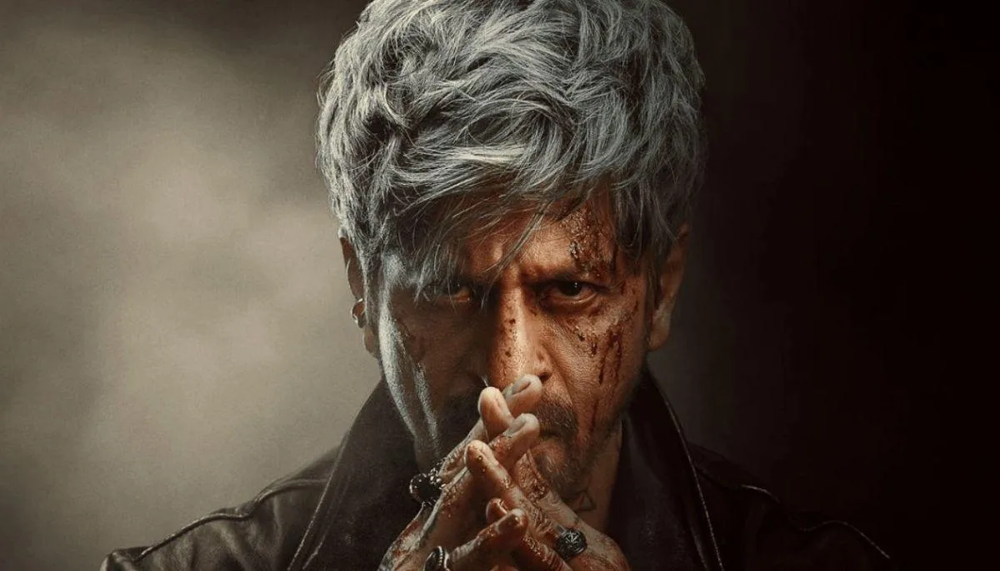
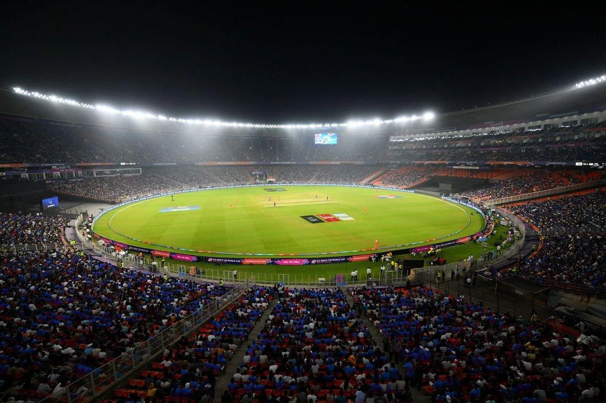

The Final Thesis · section 50 of 92
EPILOGUE
Chapter 10. The Picture Is Still in the Rough



6
Let us return to where the story began.
Ra.One. A digital experiment that attempted to turn a film into an entertainment property.
Chennai Express. A campaign that brought together social media, analytics, fan communities, digital products, and participation on a reported scale of more than one billion cumulative tweet impressions.
ZERO. A symbolic endpoint.
October 2021. A personal crisis that led the author to question the difference between a commercial fan base and a durable community.
Pathaan. Jawan. Dunki. The return of the superstar to the centre of the theatrical and commercial conversation.
And now, KING.
Alongside it, a collection of developments in endorsements, wealth estimates, cricket, global business, and interactive technology.
Each development has its own explanation. Each belongs to a different commercial context. None proves the existence of a secret, coordinated plan.
But the combination creates a fascinating question for anyone interested in the future of entertainment.
What would happen if the digital ambition of Ra.One and Chennai Express were combined with the commercial reach of the 2023 comeback, the possibilities of modern AI, and a fan ecosystem designed to last beyond the next release?
What would happen if fans were given the tools to become active participants in the cultural life of the property?
What would happen if the audience was no longer treated simply as a market to be reached, but as a creative community whose voluntary participation could help an entertainment universe grow?
And what would happen if the next chapter of the Shah Rukh Khan story were not just about the King returning to the screen, but about the relationship between the King and the kingdom being reimagined?
There is no verified answer in the public record available for this study.
There is a film called KING.
There are businesses, partnerships, investments, and public milestones.
There is a history of digital experimentation that deserves closer examination.
And there is an audience whose scale, creativity, and cultural influence continue to make the question relevant.
The evidence gives us the cards.
It does not reveal the hand.
So, what is Mr. Khan cooking?
Is it another blockbuster?
Another business expansion?
A new technology partnership?
A new chapter in celebrity marketing?
Or is the larger opportunity something that the industry has not yet fully understood?
The picture is still in the rough.
And perhaps that is precisely the point.
Picture abhi baaki hain.